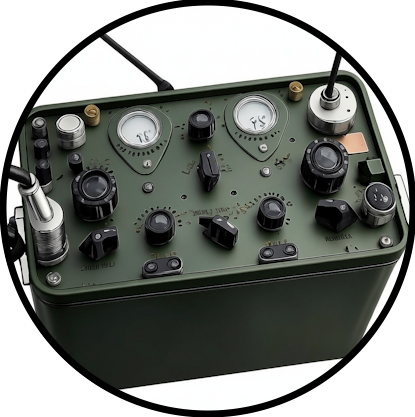

⚔️ Боевой модуль v13.145
v13.145
Если кнопка «Выход» не работает – просто закройте вкладку.
v13.145
Если кнопка «Выход» не работает – просто закройте вкладку.
Сначала отдайте необходимые приказы на оперативной карте, затем нажмите «⏭️ Завершить ход». Это завершит именно оперативный ход, а не тактическую фазу.
Текущие модификаторы, влияющие на бой:
Как заменить карту шаблона: нажмите «Загрузить» у нужного шаблона → правьте карту → «💾 Сохранить текущую карту как шаблон» и введите то же имя — старый шаблон будет обновлён (второй копии не появится). Либо «⬆️ Заменить из файла» у шаблона — и укажите JSON с картой. Импорт файла больше не стирает остальные шаблоны: совпадения по имени заменяются, новые добавляются.

Рации: Телефоны:
Телефоны:
До старта (этапы размещения и связи): выдача мгновенная. Рация или телефон сразу закрепляется за выбранным отрядом, связисты не тратят время на марш. Телефон: кабель прокладывается вручную от штаба, маршрут — до 7 гексов.
Во время игры (перераспределение): выдача отправляет двух связистов штаба. Они идут к отряду пешим ходом, и связь появляется только по их прибытии. Кнопка «Отозвать» возвращает связистов в штаб тоже пешком; телефонный кабель при отзыве снимается сразу. Отзыв возможен только вне боя. Погибших связистов вернуть нельзя.
Доступное оборудование — в строке «Доступно: X из Y». Встроенная рация бронемашины не отзывается отдельно — она снимается вместе с машиной.
Ваш юнит столкнулся с вражеским .
Начать тактический бой?
Это текущая карта операции (местность + все метки). Вставьте этот код ВМЕСТО содержимого файла maps/valencia_terrain.json — и все метки будут зашиты в код сценария (будут подгружаться при выборе сценария).